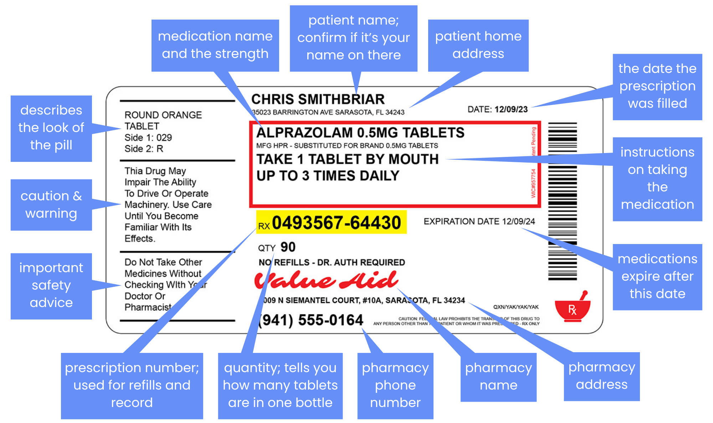

Monthly Health Tips
Health Tip flyers share short, easy to understand information on everyday health topics and local resources.
Download Health TipsTable of Contents
Flu Season & Vaccination
What is the flu vaccine?
The flu vaccine is a shot that protects you from the influenza virus, known as flu.
When should you get it?
Ideally, it is best to get the vaccination in early fall (September to October).
What are the costs?
If you are covered by insurance, you can get a flu shot at your doctor’s office, local pharmacies, and urgent care clinics.
What if you are not covered by insurance?
If you are uninsured, you can get a free or low-cost flu vaccination through community clinics or public health departments.
List of locations for free or low-cost flu vaccination:
Queens:
- NYC Health + Hospitals/Queens: 82-68 164th Street
Brooklyn:
- Fort Greene Immunization Clinic: 295 Flatbush Avenue Ext
- NYC Health + Hospitals/Kings County: 451 Clarkson Avenue
Bronx:
- Jacobi: 1400 Pelham Parkway South
Manhattan:
- Chelsea-Clinton Community Health Center: 645 10th Avenue
- NYC Health +Hospitals/Bellevue: 462 First Avenue
Healthy Choices & Food Access
🚫 “Don’t eat chips. Don’t drink soda. Cut out carbs. Avoid sugar.”
✅ “Can you add some veggies to that? Can you include some protein with your snack? Have you had any fruit today?”
Local Food Resources
Commonpoint’s Digital Food Pantry
Clients can order their monthly food selections online and pick them up later.
For more information: www.commonpoint.org/program/digital-food-pantry
Allen A.M.E. Cathedral Food Pantry
Opens every Monday from 2-4 PM, every Thursday from 11 AM-1 PM.
Address: 110-31 Merrick Blvd, Jamaica, NY 11433
For more food and nutrition resources: https://www.cianainc.org/food
Healthy Eating Tips
1️⃣ Add Frozen or Canned Vegetables to What You Already Eat
Frozen and canned veggies are affordable, last longer, and just as nutritious as fresh ones. Instead of stopping ramen completely, try adding frozen broccoli into your ramen while it boils!
2️⃣ Add a Fruit or Vegetable to Just One Meal a Day
Instead of eliminating fast food, next time you get a burger, add a side salad or bring an apple with it. Bananas, apples, carrots, and cucumbers are some of the most affordable produce items year-round.
3️⃣ Add Plant-Based Proteins like Beans and Lentils
Beans and eggs are budget-friendly protein powerhouses. Try adding them into meals you already make. Dry lentils and canned beans cost under $1 per serving and are high in fiber, protein, and nutrients.
Save Money with GoodRx
What is GoodRx?
GoodRx is a free website and app that helps you save money on prescription medications, even if you don’t have insurance. It works by providing free coupons you can use to get lower prices on medications.
Usually, GoodRx can’t be combined with insurance, but you can choose whichever price is lower, your copay or the GoodRx price. You can ask the pharmacist: “Can I use this coupon instead of my insurance?”.
How to Use GoodRx
1️⃣ Go to www.goodrx.com, or use the app
2️⃣ Search for your medication
Type in the name of the medicine (e.g., Amoxicillin). Select the correct form, strength (e.g., 500mg), and quantity.
3️⃣ Compare prices
You’ll see prices from different pharmacies (like CVS, Walgreens, etc). Prices can vary a lot.
4️⃣ Select the best coupon
Click on a coupon and you can either print it, email it to yourself, text it to your phone, or just take a screenshot.
5️⃣ Take the coupon to the pharmacy
Mental Health Resources
Know the Difference: Stress vs. a Serious Problem
Sometimes feeling stressed is temporary, other times it is a sign you need urgent help.
Emergency
Call 911 or go to the nearest ER if you:
- Think about harming yourself or someone else
- Consider using drugs or alcohol to cope with your feelings
- Experience hallucinations
Non-Emergency
Talk to a trusted adult or call a help line if you:
- Feel stressed or overwhelmed
- Have occasional trouble sleeping, eating, or focusing
- Feel lonely or isolated
Talking to a Trusted Adult? Keep These in Mind:
- Start simple, you don’t have to explain everything at once.
- Share how you’ve been feeling lately, especially if something’s been bothering you.
- It’s okay to ask for help, your feelings are valid, and you don’t have to go through it alone.
Need Someone to Talk To?
📱NYC Well (free 24/7 Hotlines): call 1-888-692-9355 or text “WELL” to 65173
📱Crisis Text Line: text “HOME” to 741741
📍Inwood Clinic: visit 4941 Broadway, Lower Level, New York, NY 10034
📍Institute for Contemporary Psychotherapy: visit 33 W 60th St, New York, NY 10023
Planned Parenthood: What Do They Actually Do?
What is Planned Parenthood?
Planned Parenthood is a nonprofit healthcare provider offering confidential, affordable, and inclusive sexual and reproductive health services to people of all ages.
You do not need insurance, a parent’s permission (in most cases), or legal immigration status to receive help.
Services Planned Parenthood Offer
✅ Birth Control
Get birth control pills, patches, implants – or just learn what options might work for you.
✅ STI Testing & Treatment
Fast, confidential testing for common STIs like chlamydia, gonorrhea, and HIV.
✅ Emergency Contraception
Available at many locations.
✅ Pregnancy Testing and Planning
If you’re pregnant, they can help you understand all your choices.
✅ And Many More
❓"Isn't Planned Parenthood just for abortions?"
Nope, more than 90% of what they do is healthcare, birth control, STI testing, and sex ed.
❓“I’m under 18 — will they tell my parents?”
In most cases in NY, you can get care confidentially without parental notification.
❓“I don’t have insurance or ID — can I still go?”
Yes, many services are free or low-cost, especially for teens.
Planned Parenthood Queens Location
📍21-41 45th Rd, Queens, NY 11101
📞(212) 965-7000
🕒Mon–Thu: 8am–7pm / Fri-Sat: 8am-6pm
To book an appointment: https://www.plannedparenthood.org/health-center
SNAP: What Is It & How You Can Apply
What is SNAP
SNAP stands for the Supplemental Nutrition Assistance Program. It helps low-income individuals and families pay for food by providing a monthly benefit on an EBT (Electronic Benefit Transfer) card, which works like a debit card.
You can use SNAP to buy:
- Fruits and vegetables
- Bread, rice, cereal, and pasta
- Milk, cheese, and eggs
- Meat, poultry, fish, tofu, and beans
SNAP can be used at most grocery stores, corner stores, and farmers market.
Quick Checklist: Do You Qualify?
You might be eligible for SNAP if:
- You have children under 18
- You’re skipping meals or cutting portions to make food last
- You work but your income isn’t enough to cover food
- You're over 60 or disabled and living on a fixed income
- You lost your job or had reduced hours recently
- You’re a green card holder, refugee, or have another eligible status
Students may also qualify under special rules. Even if you’re not sure, it’s worth checking!
How to Apply for SNAP
Option 1: Apply Online (fastest)
Visit https://access.nyc.gov/programs/snap. Complete the application, upload documents, and check your status.
Option 2: Apply In Person
Go to your local HRA (Human Resources Administration) or SNAP center. Find the closest center: call 📞 311.
Option 3: Get Help Applying
Nonprofits and community organizations can help you apply:
🏢 Food Bank for NYC
🏢 Public Health Solutions
Emergency Contraception: What Is It & Where to Get It
What is Emergency Contraception?
Emergency contraception (EC) is a safe and effective backup method to help prevent pregnancy after:
- Unprotected sex
- Birth control failure (for example, broken condom)
- Missed birth control pills
- Sexual assault
It does not end an existing pregnancy. Emergency contraception is NOT an abortion pill. It works by delaying ovulation.
Types of Emergency Contraception
1️⃣ Plan B
- Most effective within 72 hours after unprotected sex
- The sooner you take it, the better
- Available over the counter (no ID, no age limit, no prescription needed)
2️⃣ Ella
- Can be taken up to 5 days after unprotected sex
- Requires a prescription
- May work better than Plan B for people with higher body weight
Where Can You Get It
At Pharmacies
- CVS, Walgreens, Rite Aid, Target, Walmart, Duane Reade, and others
- Ask the pharmacist for “emergency contraception”
For Free at Clinics & Health Centers
- Planned Parenthood
- School-Based Health Centers (SBHCs)
- NYC Sexual Health Clinics
The New York State WIC Program
What is WIC
WIC (Women, Infants, and Children) is a program of the New York State Department of Health. WIC helps you buy healthy food for you and your family. It's a free nutrition program for low-income pregnant, breastfeeding, or postpartum women, infants, and children up to age five.
What you get from WIC:
- Money to buy healthy food and infant formula
- Nutrition classes and workshops
- Support for your pregnancy and/or growing child
- Breastfeeding support and breast pumps for parents
You are eligible to apply if:
- You are a:
- A pregnant woman
- An infant or child up to 5 years old
- A mother of an infant up to 6 months old or a breastfeeding mother with an infant up to 12 months old
- A father or caretaker applying for their children
- You are a resident of New York State (you do not need to be a U.S. citizen)
- You meet income eligibility guidelines
Learn more here: https://www.health.ny.gov/prevention/nutrition/wic/eligibility
Apply for WIC
1️⃣ Visit their website https://www.fns.usda.gov/wic to find a local clinic and make a virtual or in-person appointment.
2️⃣ Gather required documents: proof of identity, proof of residency, and proof of income.
3️⃣ Visit the local WIC clinic or have an online appointment. The staff will go over your documents and check if you are eligible.
4️⃣ Once you are qualified, you can start accessing the benefits! The staff will give more details on the benefits of WIC.
Rest for Success!
Healthy sleep habits help you feel and function at your best!
Going to bed and waking up at a similar time each day will help you feel well-rested. You can try these tips to maintain a consistent sleep schedule.
💤 Wind down with a relaxing bedtime routine
- Dim the light
- Relax by reading, listening to music, or white noise
- Go screen-free at least 30 minutes before bedtime
🌅 Wake up with an energizing morning routine!
- Stretch or exercise
- Drink a glass of water to rehydrate your body
- Change out of your pajamas
- Go outside for fresh air
💪 Exercise
Regular exercise can improve sleep. If exercising in the evening, try to get your workout in at least 2-3 hours before bed.
🛏️ Naps
Naps are a great way to recharge during the day. Limit naps to 20-30 minutes and avoid taking them within 6 hours of bedtime.
Did you know that...
Studies from the National Sleep Foundation show that in 2024, teens were almost 50% less likely to get the recommended 8-10 hours of sleep on school nights.
How to Read Prescription Label
Prescription labels may look different depending on the pharmacy, but they all include essential information, such as the medication name and directions for use.
If you’re unsure about anything, don’t hesitate to ask your pharmacist; they’re there to help!